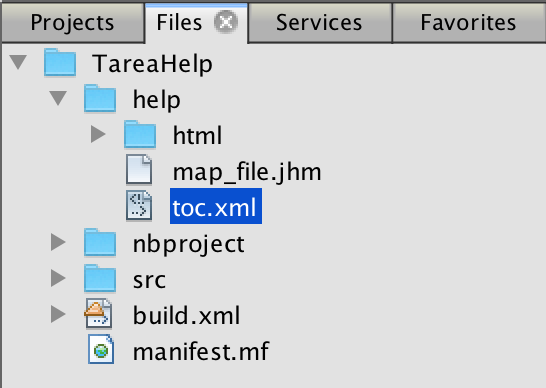
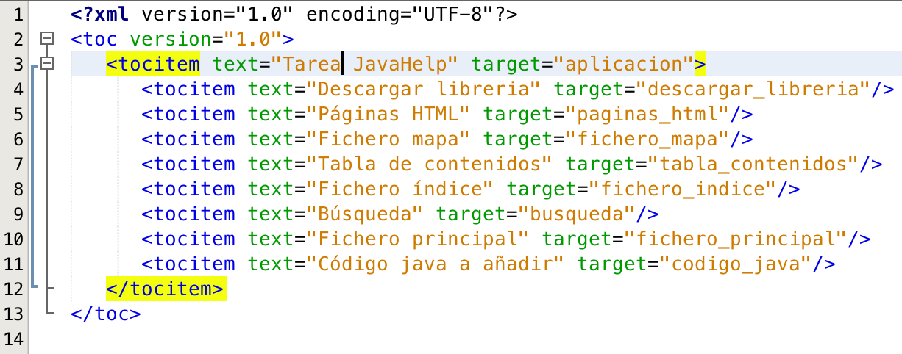

Por norma general se suele añadir a la ayuda una tabla de contenidos. Dicha tabla de contenidos no es más que una especie de "árbol" en la que van los capítulos y subcapitulos de nuestra ayuda.
La tabla de contenidos sera un archivo xml que podremos llamar "toc.xml" y lo guardaremos dentro de la carpeta "help".
Contenido:
